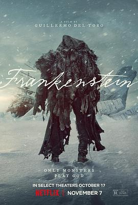

7.2
弗兰肯斯坦
Frankenstein
2025
美国
评分 7.2
导演:
吉尔莫·德尔·托罗
演员:
奥斯卡·伊萨克 / 雅各布·艾洛蒂 / 米娅·高斯 / 克里斯托弗·瓦尔兹 / 费利克斯·卡默雷尔 / 查尔斯·丹斯 / 大卫·布拉德利
类型:
剧情,恐怖,科幻
剧情简介
从北极冰海起航的船只“霍里松特号”被冻住，船员救起浑身伤痕的维克多·弗兰肯斯坦，然而随之而来的是他的“造物”——一个重生的怪物，静静等待与他对质。年轻的维克多出身于医术显赫却冷酷严苛的父亲家族，母亲在他幼年去世、弟弟威廉备受宠爱之后，他立志超越死亡。带着异乎寻常的野心，他接受巨额资助，在战后废墟与尸体之间，试图创造“生命”。某个雷雨交加的夜晚，他成功唤醒了怪物，却随即被自己的骄傲锁链缠绕：他不仅要面对外界的恐惧，还要面对创造物的反叛。怪物既被囚禁于塔中，也从父亲式的训斥中感受到仇恨，他所走出的第一个避难所，是一位盲眼老人与其孙女的农舍。秘密帮助他们、学习语言、渴望温情，却一次次被猎枪与误解驱赶。与此同时，维克多的家族正急速走向崩裂——弟弟的婚礼，未婚妻伊丽莎白的死、父亲的阴影、维克多的逃亡。当两条命运线在北极冰场交汇，被冰封的是船只，也是人心。怪物向创造者提出：你不给我存在的意义，我就定义你。维克多终于承认自己既是造物主，也是囚徒，而怪物不再只是畸形的傀儡，而是一种永生的宿命。本片将经典原著的哥特神话转换为导演对“创造”、“赎罪”与“父子”关系的深刻冥想。冰雪、实验、火焰、血肉构成视觉诗篇，而怪物对阳光伸出的手，则映射出求生、求被理解的渴望。